The foundation
I designed and welded a ladder chassis from steel tubing, combining it with upcycled bicycle wheels, cranks and steering parts to make a light but strong rolling frame.
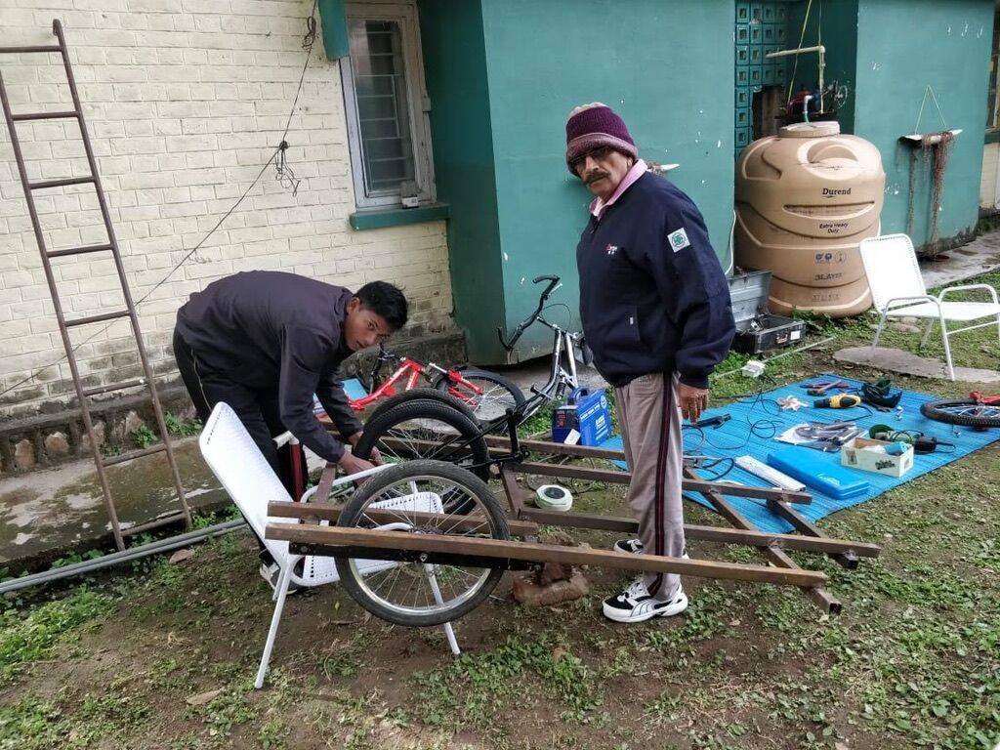
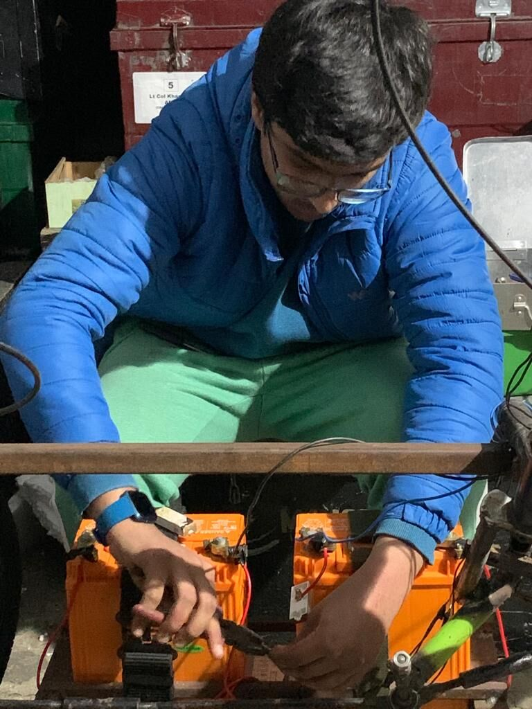
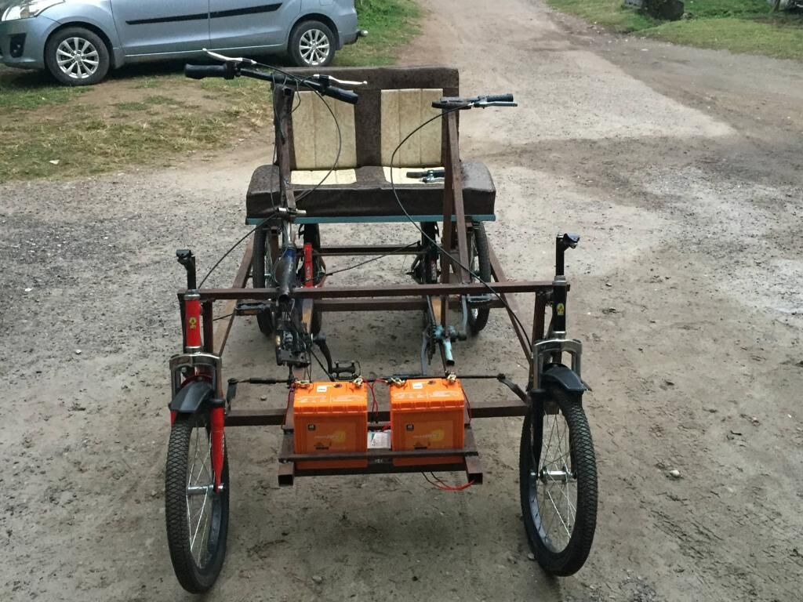
Steering and ergonomics
Ackermann geometry keeps all four wheels tracking cleanly through a turn. Seating, pedal reach and the steering column were packaged for a driver and a passenger, and the welded joints were sized for dynamic loads.
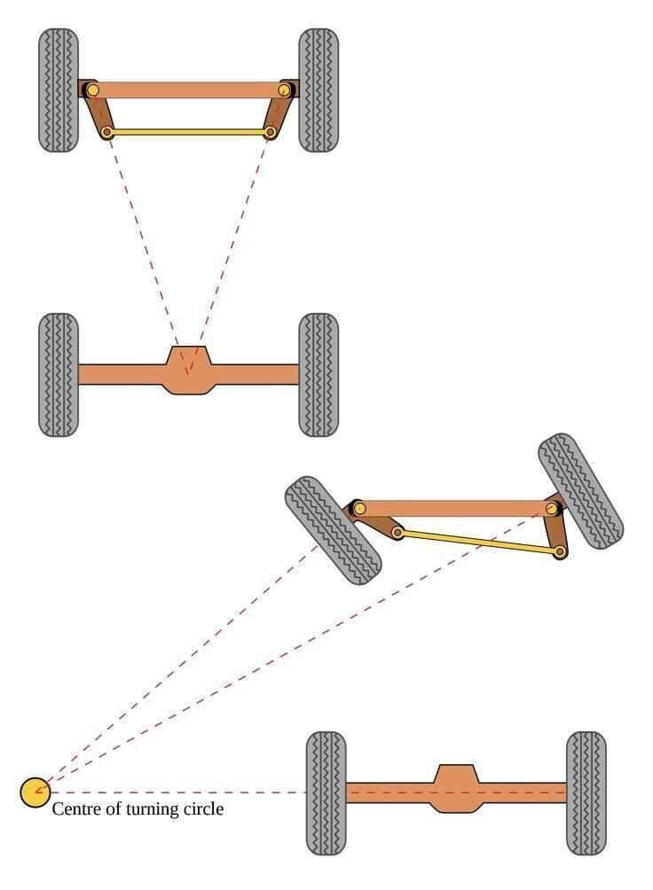
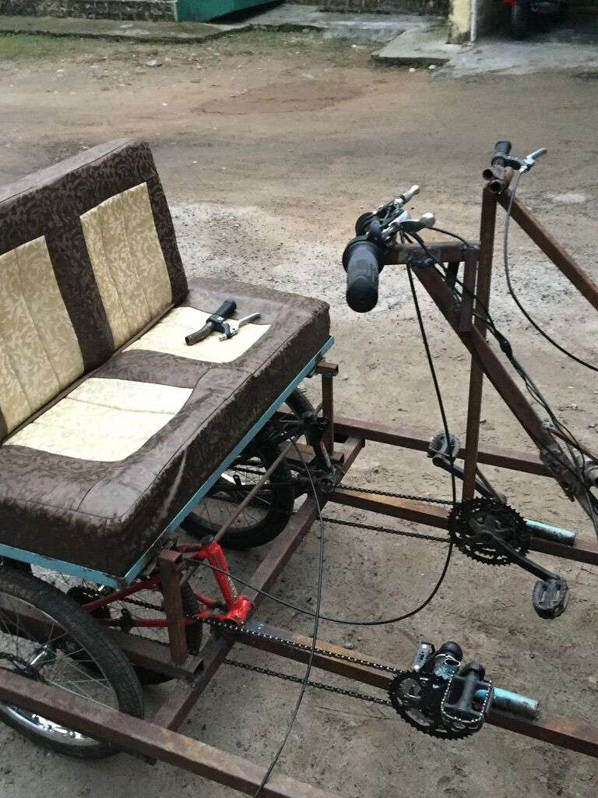
Body
A tubular canopy and hand-cut sheet-metal panels form the shell, finished in primer and blue paint with a friendly face.
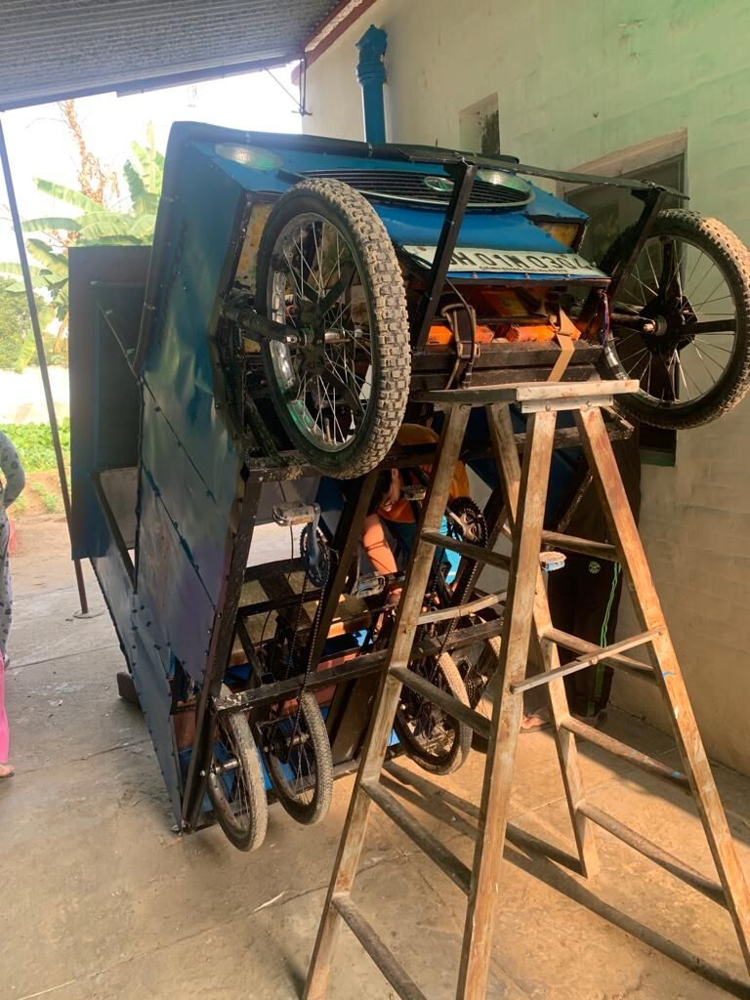
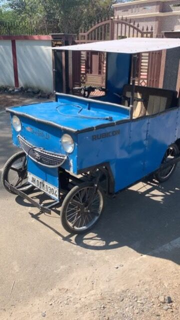
On the road
The finished Eco Jeep is a zero-emission utility vehicle that runs on battery or pedal power and has carried a lot of family and dogs.
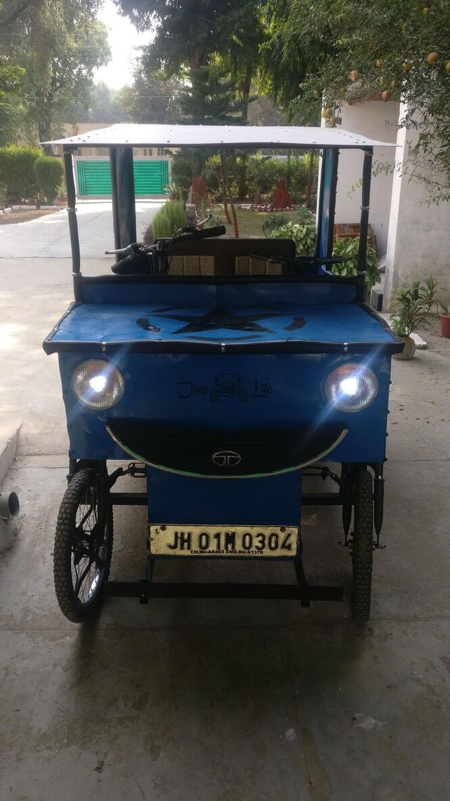
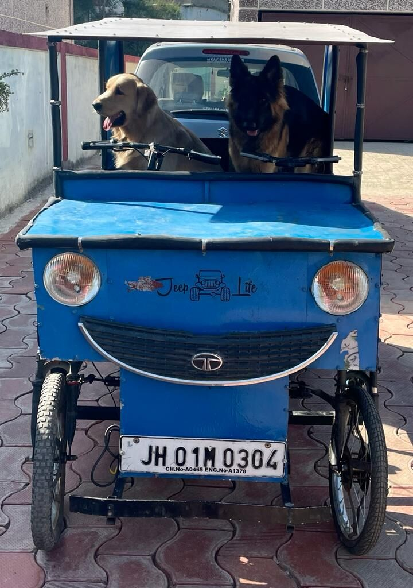
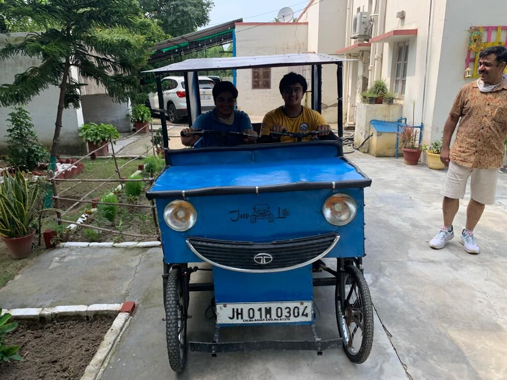
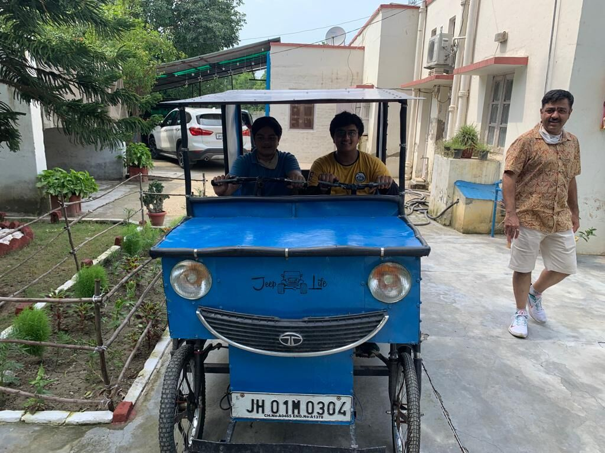
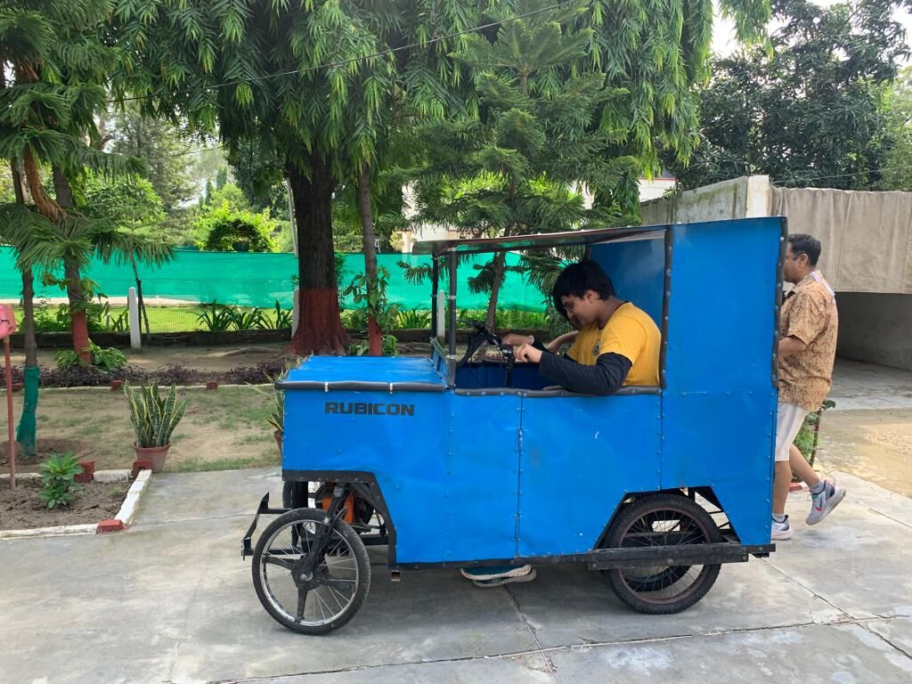